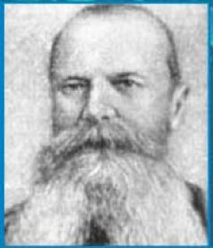
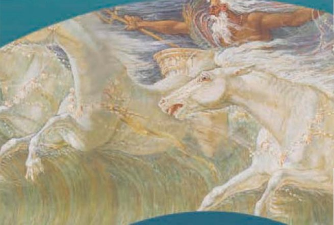
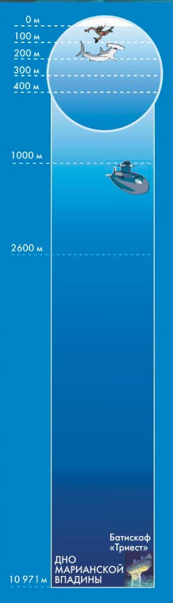
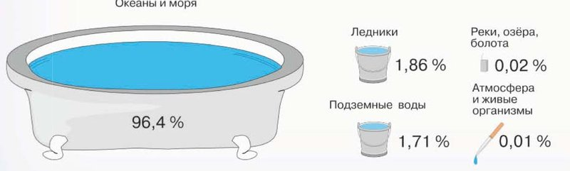
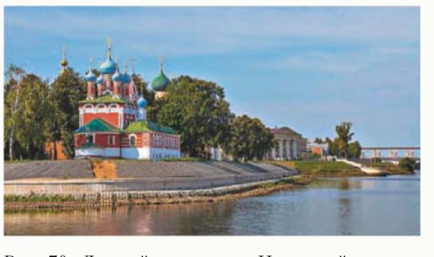
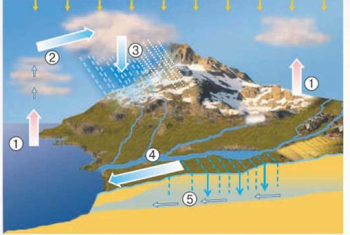

Состав и строение гидросферы
Амина, с этого параграфа начинается география 6 класса — и начинается она с воды.
Представь: ты вернулась с берега, и на руке высохла капля морской воды. Осталась крошечная белая крупинка соли. Вода исчезла — а куда?
Она превратилась в невидимый пар и поднялась в воздух. Высоко в небе пар остынет и соберётся в облако. Облако ветер унесёт далеко, и где-нибудь в горах прольётся дождь. Ручьи сбегут в реку, река вернёт воду обратно в море. И всё сначала — и так миллионы лет.
Получается, что вся вода Земли — в морях, реках, ледниках, под землёй, в облаках и даже внутри тебя — это одно целое, одна оболочка планеты. Она называется гидросфера.
Параграф отвечает на три вопроса: из чего состоит гидросфера, что происходит с водой в природе и как идёт Мировой круговорот воды. Вот четыре главные части темы:
У каждого шага написано, на какой странице учебника искать. Внизу шага есть «Подробнее, как в учебнике»: там всё, что есть на этих страницах, ничего не пропущено. Сначала учи по коротким шагам, а перед уроком открой «подробнее».
Надпись вверху шага подскажет, откуда он: синяя — из учебника, золотая — задание учебника, оранжевая — сверх учебника (пересказ, словарик, игры, самопроверка). В «Содержании» шаги так же разбиты на группы.
Подробнее, как в учебнике · с. 98
- Название параграфа: «§ 29. Состав и строение гидросферы».
- Строчка курсивом в начале параграфа — это его подтемы: «Из чего состоит гидросфера. Что происходит с водой в природе. Как происходит Мировой круговорот воды». Дальше каждая подтема идёт отдельным заголовком-вопросом.
- В конце параграфа рубрика «Запомните:» — два слова, которые надо знать наизусть: гидросфера; Мировой круговорот воды в природе.
- Вопросы и задания в конце параграфа разбиты на три группы: «Это я знаю» (1–4), «Это я могу» (5–7), «Это мне интересно» (8–10). Все они — на шаге 14.
- § 29 открывает большой раздел учебника «Гидросфера — водная оболочка Земли». Его заставка — на с. 97, это следующий шаг.
- Вверху с. 98 фотографии-заставка: волна, набегающая на берег, и ледяные поля у далёкого берега.
Гидросфера — водная оболочка Земли
С этой страницы в учебнике начинается большой раздел «Гидросфера — водная оболочка Земли». Он занимает параграфы с 29-го по 38-й: океаны и моря, реки, озёра, ледники, подземные воды. Текста на заставке почти нет — зато есть картинки и несколько важных подписей.
Самая важная подпись вверху: «Гидро» в переводе с греческого — вода, влага. Значит, «гидросфера» — это «водяная оболочка». Запомни этот кусочек слова: он будет встречаться тебе весь год.

На заставке — портрет Степана Осиповича Макарова. Он был вице-адмиралом: флотоводцем, то есть командовал кораблями, — и одновременно океанографом, учёным, который изучает океан. Макаров дважды обошёл вокруг света на корабле.
Рядом маленькие фотографии: люди сплавляются на лодке по бурной горной реке и рыбаки вытягивают на судно сеть, полную рыбы. Вода — это и опасность, и работа, и еда.
А внизу — кусочек картины английского художника Уолтера Крайна. Она называется «Кони Нептуна»: волны на ней превращаются в белых скачущих лошадей.

По преданию, древнеримский бог Нептун взмахом своего трезубца вздымал волны и успокаивал бурю.
Справа на странице нарисована шкала глубин — как будто мы опускаемся в океан всё ниже и ниже. У самой поверхности, до 400 метров, плавают водолаз и акулы. Глубже 1000 метров человек может спуститься только в специальном аппарате. А в самом низу шкалы — дно Марианской впадины, 10 971 метр: это самое глубокое место Мирового океана, туда опускался батискаф «Триест».

Сколько это — 10 971 метр?
Почти 11 километров. Если бы там на дне поставили самую высокую гору мира — Эверест (8848 м), — её вершина осталась бы под водой, и над ней было бы ещё больше двух километров воды.
Подробнее, как в учебнике · с. 97
- Страница 97 — заставка раздела «Гидросфера — водная оболочка Земли». Вверху надпись: «ГЕОГРАФИЯ. 5—6 КЛАССЫ».
- Подпись под ней: «„Гидро“ в переводе с греческого — вода, влага».
- Портрет и подпись: «Русский вице-адмирал С. О. Макаров (1848—1904) — флотоводец и океанограф, совершил два кругосветных путешествия».
- Две небольшие фотографии: сплав на надувной лодке по бурной горной реке; рыболовное судно, с которого поднимают сеть, полную рыбы.
- Фрагмент картины английского художника Уолтера Крайна «Кони Нептуна». Подпись рядом: «По преданию, древнеримский бог Нептун взмахом своего трезубца вздымал волны и успокаивал бурю».
- Во весь разворот — фотография подводного мира: большая акула и стая рыб.
- Справа — шкала глубин океана с отметками 0 м, 100 м, 200 м, 300 м, 400 м, 1000 м, 2600 м и 10 971 м. Вверху шкалы, в круге, нарисованы водолаз и акулы, ниже — подводный аппарат; внизу подписано «Дно Марианской впадины» и «Батискаф „Триест“».
- Внизу страницы — изображение Земли из космоса в круге со знаками зодиака.
Вся вода Земли — одна оболочка
Основная часть нашей жизни проходит на суше. Но если посмотреть на глобус, голубого на нём гораздо больше, чем всего остального: почти 3/4 поверхности земного шара занято водой.
Вся вода, которая нас окружает, образует единую водную оболочку Земли. Объём воды в ней колоссальный — около 1,4 млрд км³.
Гидросфера — водная оболочка Земли.
1,4 млрд км³ — это сколько?
Кубический километр — это куб, у которого каждая сторона длиной в километр: представь себе кубик размером с большой район города, доверху налитый водой. Таких кубиков — миллиард четыреста миллионов. Столько воды на нашей планете.
Гидросфера включает в себя четыре части:
К водам суши относят:
- поверхностные воды — реки, озёра, болота (их видно сверху);
- ледники — вода, застывшая льдом;
- подземные воды — вода, которая просочилась вглубь земли.
В учебнике сказано странное на первый взгляд: воды суши бывают и пресные, и солёные. Разве на суше бывает солёная вода? Бывает.
Каспийское море, у которого стоит Каспийск, учёные считают самым большим озером на Земле: оно нигде не соединяется с океаном. А вода в нём солёная, хотя соли в ней намного меньше, чем в океане, — пить её всё равно нельзя.
Подробнее, как в учебнике · с. 98
- Подтема: «Из чего состоит гидросфера?»
- Основная часть нашей жизни протекает на суше, однако почти 3/4 поверхности земного шара заняты водой. Вся вода, окружающая нас, образует единую водную оболочку Земли. Объём воды в гидросфере составляет колоссальную величину — около 1,4 млрд км³.
- В голубой рамке на полях: Гидросфера — водная оболочка Земли.
- Гидросфера включает в себя солёные воды океанов и морей, пресные и солёные воды суши и воду, содержащуюся в атмосфере и в живых организмах.
- К водам суши относят поверхностные воды (реки, озёра, болота), ледники и подземные воды.
- Дальше на этой же странице — разбор рисунка 69 и доли воды в гидросфере. Это следующий шаг.
Сколько и какой воды на Земле
Учебник просит рассмотреть рисунок 69. Всю воду гидросферы там нарисовали как большую ванну и несколько вёдер. Ванна — это океаны и моря, и она почти вся вода Земли.

- 96,4 % воды в гидросфере — это вода океанов и морей.
- Остальное приходится в основном на воды суши. Среди них больше всего ледников — 1,86 % и подземных вод — 1,71 %.
- Реки, озёра и болота, иногда огромные по площади, все вместе — менее 0,02 %.
- В атмосфере и в живых организмах — менее 0,01 % всей воды гидросферы. Но роль её огромна.
Теперь про состояние воды. Подавляющая часть воды в гидросфере — жидкая, более 98 %. Твёрдая вода (лёд или снег) — менее 2 % массы гидросферы, а газообразная (водяные пары) — всего доли процента.
И про вкус. Основная масса воды — солёная: в ней растворены разные химические соединения. Пресной воды, в которой почти нет растворённых веществ, среди жидкой воды Земли менее 3 %.
Сколько соли в пресной воде?
Учебник говорит точно: менее 1 грамма на 1 литр воды. Один грамм соли — это меньше четверти чайной ложки на целый литр. Такую воду ты и не почувствуешь солёной — её можно пить.
ОСНОВНАЯ ЧАСТЬ ГИДРОСФЕРЫ — ЭТО ЖИДКАЯ СОЛЁНАЯ ВОДА ОКЕАНОВ И МОРЕЙ.
Подробнее, как в учебнике · с. 98–99
- Рассмотрите рисунок 69. Вы видите, что 96,4 % воды в гидросфере — это вода океанов и морей. Остальное приходится в основном на воды суши. Среди вод суши наибольший объём имеют ледники и подземные воды — 1,86 % и 1,71 % от объёма гидросферы. Реки, озёра и болота, иногда огромные по площади, все вместе — это менее 0,02 % от объёма воды в гидросфере. В атмосфере и в живых организмах содержится менее 0,01 % всей воды гидросферы, но роль её огромна.
- Подпись к рисунку: «Рис. 69. Состав гидросферы и распределение воды в ней». На рисунке подписано: ванна — «Океаны и моря», 96,4 %; ведро — «Ледники», 1,86 %; ведро — «Подземные воды», 1,71 %; маленький столбик — «Реки, озёра, болота», 0,02 %; пипетка с каплей — «Атмосфера и живые организмы», 0,01 %.
- Подавляющая часть воды в гидросфере содержится в жидком виде — более 98 %. Твёрдая вода (лёд или снег) составляет менее 2 % массы гидросферы, а газообразная (водяные пары) — всего доли процента.
- Основная масса воды — солёная, т. е. в ней растворены различные химические соединения. Менее 3 % жидкой воды на Земле — пресная вода, в которой почти нет растворённых веществ (менее 1 г на 1 л воды).
- Розовая плашка с выводом: ОСНОВНАЯ ЧАСТЬ ГИДРОСФЕРЫ — ЭТО ЖИДКАЯ СОЛЁНАЯ ВОДА ОКЕАНОВ И МОРЕЙ.
- Вверху с. 99 колонтитул — название раздела: «ГИДРОСФЕРА — ВОДНАЯ ОБОЛОЧКА ЗЕМЛИ».
Вода связывает все оболочки Земли
В природе всё взаимосвязано. Между земными оболочками постоянно происходит обмен веществами и теплом. И почти везде в этом обмене участвует вода.
- Вода проникает в литосферу и образует там подземные воды.
- В атмосфере есть водяные пары, а в облаках — капельки воды и льдинки.
- В океанах, озёрах и реках много твёрдых и растворённых веществ разного химического состава. Океан богат живыми организмами.
- В биосфере вода — основная составляющая массы многих живых организмов. Около двух третей массы человеческого тела — это вода. Без воды человек не может прожить больше недели.
Что это за оболочки?
- Литосфера — твёрдая, каменная оболочка Земли.
- Атмосфера — воздушная оболочка.
- Гидросфера — водная оболочка, наша тема.
- Биосфера — оболочка, где есть жизнь: растения, животные, люди.

- медленно нагревается и медленно остывает;
- при замерзании увеличивается в объёме;
- растворяет многие вещества.
Именно эти удивительные свойства делают воду связующим звеном между земными оболочками. А благодаря превращениям жидкой воды то в лёд, то в пар и обратно в природе происходит круговорот воды.
ВОДА ИГРАЕТ ВАЖНЕЙШУЮ РОЛЬ В СТРОЕНИИ И РАЗВИТИИ ЗЕМНЫХ ОБОЛОЧЕК, А ОСОБЕННОСТИ ОБОЛОЧЕК ВЛИЯЮТ НА СОСТАВ, СВОЙСТВА И ДВИЖЕНИЕ ВОДЫ.
Подробнее, как в учебнике · с. 99
- Подтема: «Что происходит с водой в природе?»
- В природе всё взаимосвязано. Между земными оболочками происходит постоянный обмен веществами и теплом. Вода проникает в литосферу и образует подземные воды. В атмосфере содержатся водяные пары, капельки и льдинки в облаках. В океанах, озёрах и реках много твёрдых или растворённых веществ различного химического состава. Океан богат живыми организмами. А в биосфере вода — основная составляющая массы многих живых организмов. Например, около двух третей массы человеческого тела составляет именно вода. Человек не может прожить без воды больше недели (рис. 70).
- Удивительные свойства воды делают её связующим звеном между земными оболочками. Благодаря превращениям жидкой воды то в лёд, то в пар и обратно в природе происходит круговорот воды.
- В рамке на полях: «Важные свойства воды: — медленно нагревается и медленно остывает; — при замерзании увеличивается в объёме; — растворяет многие вещества».
- Подпись к фотографии: «Рис. 70. Дивный мир воды. Не случайно люди издревле селились на берегах рек».
- Розовая плашка с выводом: ВОДА ИГРАЕТ ВАЖНЕЙШУЮ РОЛЬ В СТРОЕНИИ И РАЗВИТИИ ЗЕМНЫХ ОБОЛОЧЕК, А ОСОБЕННОСТИ ОБОЛОЧЕК ВЛИЯЮТ НА СОСТАВ, СВОЙСТВА И ДВИЖЕНИЕ ВОДЫ.
Путь капли по кругу
Учебник просит рассмотреть рисунок 71. На нём нарисован весь путь воды, а цифры показывают его части. Пройди этот путь глазами от моря к горам и обратно.

А теперь весь путь словами. Вода испаряется с огромной поверхности Мирового океана. Водяной пар поднимается вверх, охлаждается и формирует облака. Одна часть воды из облаков сразу возвращается в Океан с атмосферными осадками.
Другую часть вместе с облаками воздушные потоки переносят в области над континентами. На сушу выпадают осадки в виде дождя или снега. Часть этой воды, испаряясь, снова возвращается в атмосферу. Остальная пополняет реки, озёра, ледники, подземные воды.
Наконец, вместе с речным и подземным стоком вода возвращается обратно в Океан. И круг замыкается. В Мировом круговороте воды участвуют и живые организмы, и человек.
Мировой круговорот воды в природе — непрерывное перемещение воды в атмосфере, гидросфере, биосфере и земной коре в газообразной, жидкой и твёрдой формах.
МИРОВОЙ КРУГОВОРОТ ВОДЫ ОСУЩЕСТВЛЯЕТ ВЗАИМОСВЯЗЬ ОБОЛОЧЕК ЗЕМЛИ, ПОДДЕРЖИВАЕТ ЖИЗНЬ НА ЗЕМЛЕ.
Подробнее, как в учебнике · с. 99–100
- Подтема: «Как происходит Мировой круговорот воды?»
- Рассмотрите рисунок 71. Вода испаряется с огромной поверхности Мирового океана. Водяной пар поднимается вверх, охлаждается, формируя облака. Одна часть воды из облаков с атмосферными осадками возвращается в Океан. Другую часть вместе с облаками воздушные потоки переносят в области над континентами. На сушу выпадают осадки в виде дождя или снега. Часть воды, испаряясь, возвращается в атмосферу. Остальная вода пополняет реки, озёра, ледники, подземные воды. Наконец, вместе с речным и подземным стоком вода возвращается обратно в Океан. В Мировом круговороте воды участвуют и живые организмы, и человек.
- Подпись к рисунку: «Рис. 71. Мировой круговорот воды: 1 — испарение; 2 — перенос влаги; 3 — осадки; 4 — поверхностный сток с суши; 5 — подземный сток».
- В синей рамке на полях с. 99: «Мировой круговорот воды в природе — непрерывное перемещение воды в атмосфере, гидросфере, биосфере и земной коре в газообразной, жидкой и твёрдой формах».
- Розовая плашка с выводом на с. 100: МИРОВОЙ КРУГОВОРОТ ВОДЫ ОСУЩЕСТВЛЯЕТ ВЗАИМОСВЯЗЬ ОБОЛОЧЕК ЗЕМЛИ, ПОДДЕРЖИВАЕТ ЖИЗНЬ НА ЗЕМЛЕ.
Как быстро обновляется вода
Круговорот идёт везде, но не одинаково быстро. В разных частях гидросферы вода обновляется с очень разной скоростью. Вот весь список — от самой медленной воды к самой быстрой.
- Глубокие подземные воды — до нескольких миллионов лет. Медленнее всего.
- Материковые ледники полярных широт — тысячи и десятки тысяч лет.
- Вода океанов — примерно 3 тыс. лет.
- Вода болот и горных ледников — несколько сотен лет.
- Вода озёр — десятки и сотни лет.
- Реки — от нескольких недель до нескольких месяцев.
- Вода в атмосфере «оборачивается» за 7—9 дней.
- Вода в живых организмах — обычно за несколько часов.
Получается забавно: вода в тебе меняется за часы, вода в облаке над тобой — за неделю с небольшим, а вода глубоко под землёй может лежать там дольше, чем существуют люди.
Что значит «обновляется»?
Это значит, что вся вода, которая сейчас есть в этом месте, постепенно уходит и на её место приходит другая. В реке это видно прямо сейчас: вода утекает, а сверху приносит новую. В глубоких подземных водах то же самое, только очень-очень медленно.
Гидросфера. Мировой круговорот воды в природе.
Это два слова параграфа, которые надо знать наизусть. Оба есть в словарике на следующих шагах.
Подробнее, как в учебнике · с. 100
- В разных частях гидросферы вода проходит круговорот, обновляется с различной скоростью. Медленнее всего этот процесс идёт в глубоких подземных водах — до нескольких миллионов лет, довольно медленно и в материковых ледниках полярных широт — тысячи и десятки тысяч лет. Вода океанов проходит круговорот примерно за 3 тыс. лет, вода болот и горных ледников — за несколько сотен лет, вода озёр — за десятки и сотни лет. Гораздо быстрее обновляются реки — от нескольких недель до нескольких месяцев. Вода в атмосфере «оборачивается» за 7—9 дней, а в живых организмах — обычно за несколько часов.
- Рубрика «Запомните:» — гидросфера; Мировой круговорот воды в природе.
- Дальше на с. 100 идут вопросы и задания в конце параграфа, они собраны на шаге 14.
Словарик: из чего состоит гидросфера
ИграНажми на карточку, и она перевернётся. Словарик из двух частей, открой все карточки.
Словарик: круговорот воды
ИграВторая часть: как вода путешествует и где она бывает.
Слова с секретом
ИграУ каждого из этих слов есть перевод или разгадка. Нажми на слово слева, потом на его разгадку справа.
Путь капли
ИграКапля начинает путь в океане. Нажимай на шаги по порядку — от первого к последнему, пока капля не вернётся обратно в Океан.
Найди лишнее
ИграТри из одной компании, одно чужое. Найди чужое.
Проверь себя
Вопросы из учебника
Это вопросы и задания в конце параграфа. Номера и группы такие же, как в твоём учебнике. Рядом с каждым написано, на каком шаге искать ответ. Отвечай своими словами: так лучше запоминается, и учитель услышит, что ты поняла, а не заучила.
Это я знаю
Что такое гидросфера? Пользуясь рисунком 69, расскажите о её составе.
Подсказка: определение — в голубой рамке на шаге 3, там же четыре части гидросферы и что относят к водам суши. Рисунок 69 и все проценты — на шаге 4. Начни с определения, потом иди по рисунку от самой большой части к самой маленькой.
Шаг 3 · Что такое гидросфера Шаг 4 · Сколько и какой водыКаково значение круговорота воды в природе?
Подсказка: посмотри плашку с выводом в конце шага 6 — в ней сказано главное двумя словами. А подробности ищи на шаге 5: что вода делает с оболочками Земли и почему без неё не проживёшь.
Шаг 6 · Мировой круговорот воды Шаг 5 · Вода связывает оболочкиГидросфера состоит из: а) поверхностных вод суши, вод Мирового океана, воды в атмосфере, подземных вод, ледников; б) вод суши и вод Мирового океана; в) вод рек, морей, озёр, болот, прудов.
Подсказка: проверь каждый вариант по списку из шага 3. Какой из трёх ничего не забыл — ни атмосферу, ни ледники, ни подземные воды?
Шаг 3 · Что такое гидросфераВоды океанов и морей составляют от всего объёма гидросферы: а) 2,6 %; б) 96,4 %; в) 1,7 %.
Подсказка: это число подписано прямо на ванне на рисунке 69 (шаг 4). Два других числа тоже из параграфа — посмотри, к чему они относятся на самом деле.
Шаг 4 · Сколько и какой водыЭто я могу
Какие воды суши находятся в вашей местности? Что означают их названия?
Подсказка: сначала вспомни по шагу 3, что учебник относит к водам суши — не только реки. Потом возьми карту Дагестана и посмотри, что есть вокруг Каспийска. Про названия спроси у взрослых или поищи в словаре: многие названия рек и озёр в Дагестане пришли из местных языков.
Шаг 3 · Что такое гидросфераВода покрывает почти 3/4 поверхности нашей планеты. Используя физическую карту мира, докажите это. Какие части гидросферы можно увидеть на физической карте полушарий?
Подсказка: «доказать по карте» — значит показать, чего на ней больше: закрой ладонью сушу и посмотри, сколько осталось голубого. Для второго вопроса пройдись по списку частей гидросферы из шага 3 и спроси про каждую: видно ли её на карте? Подземные воды на карте не нарисованы, а вот что нарисовано — найди сама.
Шаг 3 · Что такое гидросфера Шаг 4 · Сколько и какой водыПо карте выясните, равномерно ли распределена вода по суше. В каких районах воды недостаточно?
Подсказка: ответа в тексте параграфа нет, его надо найти на карте. Посмотри, где рек много и они густые, как ветки дерева, а где на больших пространствах рек почти нет. Обрати внимание на жёлтые и оранжевые пятна на карте Африки и Азии — как они называются?
Это мне интересно
Предложите своим родным, друзьям, знакомым закончить предложение: «Вода для меня — это…» Запишите и свой вариант ответа. Проанализируйте полученные результаты. Выясните, какие ответы чаще всего давали участники вашего исследования, какие ответы вас заинтересовали. Обсудите результаты с родителями и одноклассниками.
Подсказка: это маленькое исследование, его надо сделать самой. Спроси хотя бы пять человек, запиши ответы в столбик, а потом посмотри, какие слова повторяются чаще всего. Если захочется подсказать собеседнику, о чём подумать, вспомни шаг 5: что вода значит для тела человека.
Шаг 5 · Вода связывает оболочкиВоду называют сокровищем природы. Подберите высказывания поэтов, писателей, учёных о воде. Какие из них и почему вам особенно понравились?
Подсказка: поищи в сборниках стихов, в интернете или спроси у библиотекаря. Выпиши два-три высказывания и к каждому напиши одно предложение: почему оно тебе понравилось. Это и будет ответ.
Выясните, как можно наблюдать Мировой круговорот воды в том месте, где вы живёте. Опишите его.
Подсказка: возьми пять частей круговорота из шага 6 и для каждой спроси себя: а это я когда-нибудь видела своими глазами в Каспийске? Где здесь испаряется вода, откуда приходят облака, какие бывают осадки, куда стекает вода после дождя. Игра «Путь капли» на шаге 11 поможет ничего не забыть.
Шаг 6 · Мировой круговорот воды Шаг 11 · Путь каплиПодробнее, как в учебнике · с. 100
- Все десять вопросов и заданий с. 100 перечислены выше, в том же порядке и с теми же номерами, что в книге.
- Значок «Это я знаю» стоит у вопросов 1–4, «Это я могу» — у вопросов 5–7, «Это мне интересно» — у вопросов 8–10.
- Перед вопросами на с. 100 — рубрика «Запомните:» со словами «Гидросфера. Мировой круговорот воды в природе».
Что такое гидросфера и из чего она состоит?
Это первый вопрос параграфа из группы «Это я знаю»: «Что такое гидросфера? Пользуясь рисунком 69, расскажите о её составе». Он же и главный: если ты ответишь на него целиком, ты рассказала весь параграф.
Вот четыре «кирпичика» для ответа. Открой их, а потом попробуй рассказать всё сама, не подглядывая.
Гидросфера — это вся вода Земли: почти вся она (96,4 %) — жидкая солёная вода океанов и морей, остальное приходится на воды суши, атмосферу и живые организмы, и вся эта вода непрерывно движется по Мировому круговороту, который связывает оболочки Земли и поддерживает жизнь.